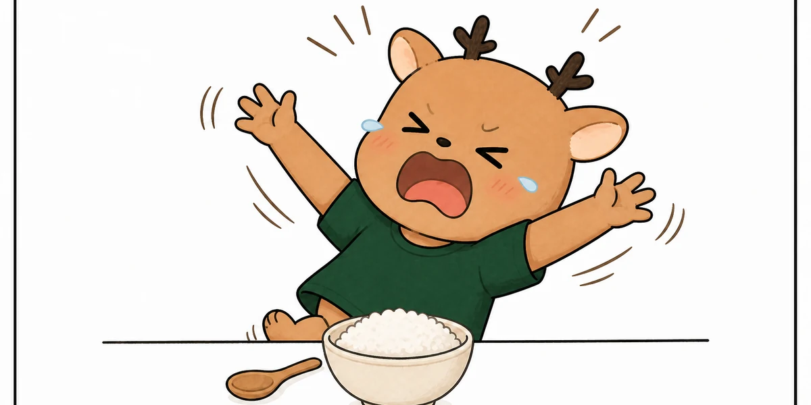
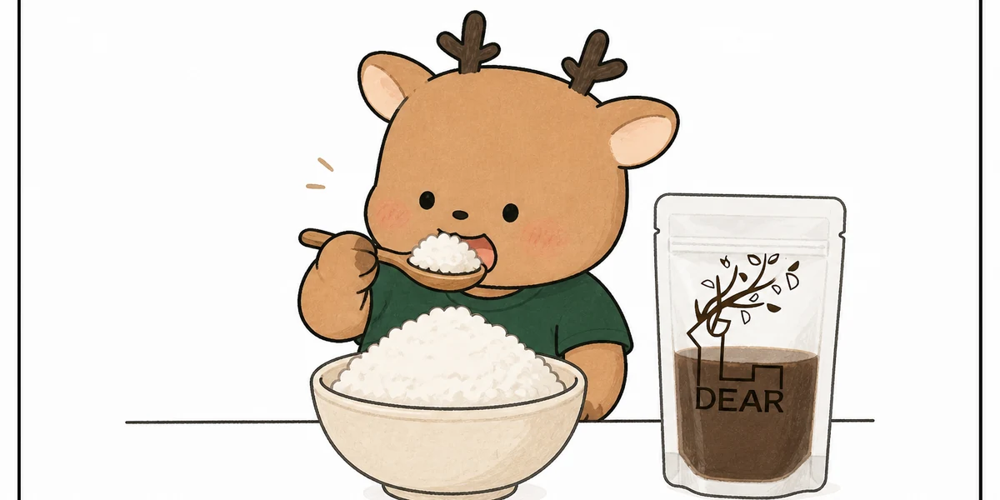

성장 한약을 먹으면 간수치가 올라갈까요?
적절하게 처방하고 관리하는 한약이 일반적으로 간손상을 일으킨다고 볼 근거는 없습니다.
한약이 간에서 대사되기 때문에 간에 좋지 않다는 이야기가 있지만, 간에서 대사된다는 사실과 간을 손상한다는 것은 전혀 다른 의미입니다. 해열제, 감기약, 항생제, 건강기능식품과 음식의 여러 성분도 간의 대사 과정을 거칩니다.
국내 한약 복용자를 포함한 9개 임상연구의 분석 대상
한의원 진료 환경과 가까운 외래 환자에서 보고된 발생률
해당 메타분석에서 한약 관련 간손상 발생률은 전체 약 0.49%로 추정됐으며, 외래 환자에서는 약 0.03%로 보고됐습니다. 이는 “한약을 먹으면 간손상이 흔하게 발생한다”는 인식과 큰 차이가 있습니다.
근거 확인 · Risk levels of herb-induced liver injury in Korea감기약과 항생제도 간수치에 영향을 줍니다
감기약과 항생제도 종류와 용량, 복용 기간 및 개인의 건강 상태에 따라 간수치에 영향을 줄 수 있습니다.
간수치는 ‘한약이냐 양약이냐’보다 복용 조건을 함께 봐야 합니다.
아세트아미노펜은 적정 용량에서 유용하지만, 여러 제품을 함께 먹으면 성분이 중복될 수 있습니다.
아목시실린·클라불란산 복합제도 약인성 간손상의 대표적인 원인 약물로 알려져 있습니다.
이것은 감기약이나 항생제가 위험하다는 의미가 아닙니다. 한약과 양약 모두 필요한 상황에서 정확한 용량과 기간을 지켜 사용해야 한다는 뜻입니다.
따라서 “양약은 간에 안전하지만 한약은 간에 해롭다”는 식의 구분에는 과학적인 근거가 없습니다. 중요한 것은 아이의 상태에 맞는 처방인지, 연령과 체중에 맞는 용량인지, 기존 질환과 복용 중인 약을 확인했는지입니다.
근거 확인 · LiverTox: Acetaminophen 근거 확인 · LiverTox: Amoxicillin-Clavulanate성장 한약을 먹으면 살이 찔까요?
치료 후 식욕과 소화 상태가 좋아져 성장에 필요한 체중이 증가하는 것과 소아비만은 구별해야 합니다.
성장기에는 키와 체중이 함께 증가하는 것이 자연스럽습니다. 소아비만은 체중이 몇 킬로그램 늘었는지만으로 판단하지 않고, 성별과 연령에 따른 BMI 백분위수와 성장곡선, 체중 증가 속도를 함께 확인합니다.


오히려 한약은 소아비만 관리에도 활용됩니다
국내 소아·청소년 과체중 및 비만 환자 209명의 진료기록을 분석한 다기관 연구에서는 한약을 포함한 한의치료 후 체중과 BMI 백분위수 및 z점수가 유의하게 감소했습니다. 중대한 이상반응은 보고되지 않았으며, 키 성장 지표도 함께 관찰됐습니다.
소아비만 관리의 기본은 식사, 활동량, 수면과 가족의 생활습관을 함께 바로잡는 것입니다. 한의학적 치료는 이러한 생활관리와 함께 아이의 식욕, 소화, 배변, 수면 및 체중 증가 양상을 종합적으로 관리하는 적극적인 치료 선택지가 될 수 있습니다.
근거 확인 · 소아·청소년 비만 한의치료 다기관 연구어린이 성장 치료는 키만 보는 치료가 아닙니다
성장이 더딘 아이들을 진료하다 보면 식욕부진과 편식, 배앓이, 소화불량, 설사, 비염, 알레르기성 두드러기, 두통과 얕은 잠을 함께 가지고 있는 경우가 많습니다.
부모님은 키를 가장 걱정해 내원하셨지만, 진찰해 보면 먼저 돌봐야 할 문제가 소화와 배변, 수면인 경우가 많습니다. 아이의 상태에 맞게 치료한 뒤에는 부모님께서 다음과 같은 변화를 말씀해 주십니다.
“배가 아프다는 말을 덜 해요.”
“설사가 줄고 식사를 편안하게 해요.”
“코막힘이 덜해져서 밤에 잘 자요.”
“반복되던 두통이나 두드러기가 줄었어요.”
식사와 수면이 안정되고 아이의 전반적인 컨디션이 좋아지는 가운데 성장곡선도 꾸준히 이어지는 것을 확인하면서 만족스럽게 치료를 마치는 경우가 많습니다.
성장 한약의 효과도 연구되고 있습니다
성장 한약에 사용되는 소재를 표준화한 복합물에 대해서는 무작위·이중맹검·위약 대조시험이 시행됐습니다. 해당 연구에서는 성장 관련 복합물을 섭취한 아이들의 키 성장에 긍정적인 결과가 확인됐으며, 뼈 나이가 더 빠르게 진행되는 현상도 관찰되지 않았습니다.
근거 확인 · 어린이 키 성장 관련 무작위 대조 연구성장 한약을 처방하기 전에 확인합니다
같은 나이의 아이라도 성장 상태와 필요한 치료는 모두 다릅니다. 현재의 성장 속도와 성장곡선, 식욕과 소화, 수면, 체중 및 사춘기 진행 상태를 세심하게 확인한 뒤 아이에게 맞는 치료 방향을 정해야 합니다.
소문보다 아이의 성장곡선을 확인하세요
성장 한약이 간을 망친다거나 아이를 살찌는 체질로 바꾼다는 이야기는 현재의 연구로 뒷받침되지 않습니다. 적절하게 처방된 성장 한약은 아이의 상태에 따라 키와 체중의 균형을 함께 관리하는 치료입니다.
아이가 전보다 잘 먹고, 편안하게 소화하고, 깊이 자고, 덜 아프며 활기차게 생활하는 것. 그 건강한 바탕 위에서 자신의 성장 잠재력을 충분히 발휘하도록 돕는 것이 저희가 생각하는 올바른 어린이 성장 치료입니다.